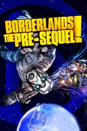

|  | |
| Tiempo de juego | No Jugado |
| Última actividad | Nunca |
| Añadido | 11/6/2024 14:41:31 |
| Modificado | 11/8/2024 17:35:04 |
| Estado de finalización | No Jugado |
| Librería | Playnite |
| Fuente | 6TB STORE |
| Plataforma | Android Macintosh Microsoft Xbox 360 Microsoft Xbox One Nintendo Switch PC (Linux) PC (Windows) Sony PlayStation 3 Sony PlayStation 4 |
| Fecha de lanzamiento | 10/14/2014 |
| Puntuación de la Comunidad | |
| Puntuación de la Crítica | 76 |
| Puntuación de usuario | |
| Género | Action role-playing First-person shooter |
| Desarrollador | 2K Australia Gearbox Software |
| Editor | 2K |
| Característica | Multiplayer Single-player |
| Enlaces | Wikipedia Official website |
| Tag | [Game Engine] Unreal Engine 3 [People] composer: Des Shore [People] composer: Jesper Kyd [People] composer: Justin Mullins [People] writer: Anthony Burch |
Borderlands: The Pre-Sequel is a 2014 action role-playing first-person shooter video game developed by 2K Australia, with assistance from Gearbox Software and published by 2K. It is the third game in the Borderlands series, and is a spin-off set after 2009's Borderlands and before 2012's Borderlands 2. It was released for Linux, OS X, PlayStation 3, Windows, and Xbox 360 on 14 October 2014. Updated ports for Windows, PlayStation 4 and Xbox One were released as part of Borderlands: The Handsome Collection on 24 March 2015.
The storyline of The Pre-Sequel focuses on Jack, an employee of the Hyperion corporation; after the company's Helios space station is captured by a military unit known as the Lost Legion, he leads a group of four Vault Hunters—all of whom were non-playable characters and bosses in previous Borderlands games—on an expedition to re-gain control of Helios, defeat the Lost Legion, and find the hidden vault on Pandora's moon Elpis. The game expands upon the engine and gameplay of Borderlands 2 and introduces new gameplay mechanics, including low-gravity environments, freeze weapons, and oxygen tanks, which are used to navigate and perform ground slamming attacks.
The Pre-Sequel received positive reviews, being praised for its new gameplay features and character classes, but was criticised for its confusing level design and not providing enough significant deviations from the core mechanics and gameplay of Borderlands 2.
Gameplay in The Pre-Sequel is similar to Borderlands 2, but with the addition of new mechanics. Two varieties of items have been added, including laser guns, and items possessing a cryogenic elemental effect, which can be used to slow down and freeze enemies. Enemies that are frozen take increased damage from explosive, melee or critical attacks and are smashed into pieces when killed. The game features low-gravity environments, causing players to jump higher but slower, and items such as loot and dead bodies to float away. O2 kits are added to supply air while in space; oxygen supplies can be replenished using generators, vents, and through oxygen tank items dropped by enemies. The kits can be used like a jetpack to perform double jumps, hovering, and ground slamming attacks; as with other items, different types of O2 kits can provide stat bonuses and affect how ground slams deal damage. A new "Grinder" machine allows players to deposit combinations of existing weapons to receive one of higher rarity. Vehicles were introduced, including a Moon buggy, and the "Stingray"—a type of hoverbike.
As with Borderlands 2, completing the main campaign with a character unlocks "True Vault Hunter Mode", a second playthrough that is higher in difficulty, while beating the mode and reaching level 50 unlocks the third playthrough "Ultimate Vault Hunter Mode".
The Pre-Sequel features four playable characters, each with a different class and abilities. All four of The Pre-Sequel's protagonists were non-player characters (NPCs) or bosses in previous Borderlands games.
Athena, "the Gladiator", is a rogue assassin from the Atlas Corporation introduced in the Borderlands DLC campaign The Secret Armory of General Knoxx. As her primary skill, Athena can temporarily use a shield to absorb damage; her skill trees revolve around upgrading the shield, allowing it to be thrown at enemies, and absorb and reflect elemental damage, or towards melee attacks or elemental damage.
Nisha, "the Lawbringer", first appeared in Borderlands 2 as Handsome Jack's girlfriend and the sheriff of the town of Lynchwood. Her primary skill, "Showdown", allows her to automatically aim at enemies for a period of time, increasing gun performance for the duration. Her skill trees revolve around increasing her survivability, Showdown performance, or gun damage.
Claptrap, "the Fragtrap", is the last remaining robot of its kind as of Borderlands 2; his skill "VaultHunter.exe" generates random effects depending on the current situation. These effects can have a positive or negative impact on the player and their party members; among these effects are versions of skills used by the previous playable characters in the franchise.
Wilhelm, "the Enforcer", is a mercenary who becomes increasingly augmented with technology and weaponry over the course of the game, transforming him into Jack's cybernetic minion who is fought in Borderlands 2. He can summon a pair of drones, Wolf and Saint; Wolf serves an offensive role by attacking other enemies, while Saint defends Wilhelm by providing shields and health regeneration.
Two additional playable characters have been released as downloadable content. The first character, Jack, "the Doppelganger", is a man called Timothy Lawrence working as a body double of Jack who can summon digital copies of himself to help in battle. The second, Aurelia, "the Baroness", is the sister of Sir Hammerlock who uses an experimental "Frost Diadem Shard" to deal ice elemental damage to enemies.
Multiple characters from past Borderlands titles also appear. Handsome Jack, the main antagonist of Borderlands 2, appears as a key non-playable character, with the game's story mainly centered around his descent into villainy and rise to power. Additional returning characters include Miss Mad Moxxi, Tiny Tina, Sir Hammerlock, Professor Nakayama, Crazy Earl, and Mr. Torgue. The four playable Vault Hunters from the first game, Lilith, Roland, Brick, and Mordecai, also appear in supporting roles. The Pre-Sequel's DLC includes appearances from Borderlands 2's playable Vault Hunters Gaige and Axton, Patricia Tannis, Dr. Zed, Mr. Blake, and T.K. Baha.
The Pre-Sequel begins on Sanctuary after the events of Borderlands and Episode 3 of Tales from the Borderlands, where Lilith, Brick, and Mordecai interrogate the captured Athena. Athena recounts her story via flashback, starting after the death of General Knoxx, when she received an offer to find a Vault on Pandora's moon, Elpis, from a Hyperion programmer named Jack. She joins fellow Vault Hunters Claptrap, Nisha, Wilhelm, Timothy, and Aurelia on a spaceship headed for the Hyperion moon base Helios. On the way they are ambushed by the Lost Legion, an army of former Dahl marines led by Tungsteena Zarpedon, and crash-land onto Helios. After meeting up with Jack, they try to use Helios' defense system against the Lost Legion, but there is a jamming signal coming from Elpis. They attempt to escape but are stopped by Zarpedon and a mysterious alien, so Jack stays behind and sends the Vault Hunters to Elpis via a moonshot rocket.
On Elpis, the Vault Hunters are guided by the junk dealer Janey Springs to the spaceport town Concordia. There, they request help from Jack's ex-girlfriend Moxxi to disable the jamming signal. They discover that the signal was put up by the Meriff, a former subordinate of Jack who is now in charge of Concordia. Meanwhile, Zarpedon uses Helios' primary weapon, the Eye of Helios, to fire upon Elpis, intending to destroy it to stop Jack from opening the Vault. Jack kills the Meriff, then decides to build a robot army to retake Helios.
The team infiltrates a Lost Legion base run by two Dahl officers, the Bosun and the Skipper, in search of a military artificial intelligence. After defeating the Bosun, the Skipper, who renames herself Felicity, is revealed to be the A.I. they seek. The Vault Hunters travel to a robot production facility, where Jack enlists Gladstone, a Hyperion scientist, to build his army. Gladstone suggests using his prototype robot, the Constructor, which can build an infinite number of robots. Felicity agrees to become the A.I. for the Constructor, but hesitates upon witnessing the violence she has to go through. She is forced into the Constructor, but takes control of it and battles the Vault Hunters. Felicity is defeated and her personality is deleted from the Constructor.
With his robot army, Jack and the Vault Hunters travel to Helios with the aid of Moxxi and former Vault Hunters Roland and Lilith. On Helios, Jack kills Gladstone and his team of scientists, suspecting one of them to be a Lost Legion spy. The Vault Hunters defeat Zarpedon and proceed to reboot the Eye of Helios, which is revealed to be the eye of the Destroyer from the first game, turned into a weapon by Jack. Moxxi, Roland, and Lilith betray Jack and destroy the Eye to prevent him from gaining its power. Seeking revenge, Jack and the Vault Hunters travel back to Elpis, where they find its Vault already opened. They battle the Vault's alien forces and defeat its guardian, the Empyrean Sentinel.
Jack enters the Vault but finds nothing of value, other than a mysterious floating symbol. As he interacts with it, the symbol shows Jack a vision of the Warrior. However, he is interrupted by Lilith who destroys the Vault symbol, burning it onto Jack's face and disfiguring him. She teleports away, leaving a scarred and insane Jack behind, who swears vengeance on Lilith and all the "bandits" on Pandora. Seeing how low Jack has fallen, Athena leaves his employ.
After listening to Athena's story, Lilith orders the Crimson Raiders to execute her against Brick and Mordecai's protests. However, as they open fire on her, Athena is saved by the alien previously seen on Helios, revealed to be an Eridian. The Eridian warns the Vault Hunters of an imminent war, and that they will need "all the Vault Hunters they can get".
During the credits, several scenes reveal what became of the Vault Hunters afterwards. Wilhelm and Nisha join Jack; Wilhelm is transformed further into a machine and destroys the settlement of New Haven while Nisha is made Lynchwood's sheriff and hooks up with Jack; Athena discards the money given to her by Jack and leaves Elpis; Claptrap is dismantled and left for dead by Jack. In a post-credit scene, Jack, now calling himself "Handsome Jack" and wearing a synthetic mask, murders his CEO Harold Tassiter and replaces him as the new head of Hyperion.
The Claptastic Voyage story add-on continues shortly after Handsome Jack's takeover of Hyperion, as he discovers a secret program called the H-Source, containing all of Hyperion's secrets. However, it was hidden inside the "Fragtrap" unit by Tassiter. Jack employs his Vault Hunters once more to be digitally scanned and sent into Claptrap's mind in order to retrieve the H-Source. In the process, the Vault Hunters are tricked into releasing 5H4D0W-TP, a subroutine representing Claptrap's inner evil side, who attempts to use the H-Source for his own gains. As the group pursues 5H4D0W-TP, they delve deeper into Claptrap's mind, learning of his origin and the reasons for his quirky behavior. Eventually, the group defeats 5H4D0W-TP and retrieve the H-Source for Jack. Jack reveals his plan to use the H-Source to wipe out all existing CL4P-TP units, including Claptrap himself. All CL4P-TP units are disabled and dumped in Windshear Waste; however, 5H4D0W-TP, who still remains alive within Claptrap, sacrifices himself to revive Claptrap, allowing him to be found and saved by Sir Hammerlock.
Borderlands 2, developed by Gearbox Software and released in late 2012, was one of the most successful video games in 2K's history. Speaking in February 2013, Gearbox CEO Randy Pitchford stated that there were no plans for a third installment in the franchise, as the company believed that a sequel to Borderlands 2 would have to be "massive", but that "when you think of what Borderlands 3 should be... No, we don't know what that is yet. We can imagine what it must achieve, but we don't know what it is yet". The company also cited a desire to focus its attention onto new games for next-generation consoles, such as Brothers in Arms: Furious Four, Homeworld: Shipbreakers (a new game in the Homeworld franchise, which Gearbox had recently acquired in THQ's bankruptcy auction), and new properties such as Battleborn. Despite this, the company still believed that they had not yet met the demands of fans, or even its own staff, in regards to the franchise (even with the overall success of Borderlands 2 and the large amount of downloadable content that had been released), prompting the creation of spin-offs such as Tales from the Borderlands, an episodic adventure game being developed by Telltale Games, and a port of Borderlands 2 for PlayStation Vita.
A few months after the release of Borderlands 2 (and shortly after it had concluded its contributions to BioShock Infinite), Gearbox began working with 2K Australia to develop a prequel to the game which would take place directly after the events of the original. The decision to make the game a prequel to Borderlands 2 was centered around a desire to use the Hyperion moonbase (a location alluded to, and visible in Borderlands 2) as a playable location; the development team felt that going to the moonbase in a sequel to Borderlands 2 would be too "boring" for players since the relevant conflict was already resolved, and because "if we're going to go to the moonbase anyway, what if we try something completely different that people aren't expecting[?]". Pitchford noted that this setting would allow the game to address plot elements and events alluded to in the first two games that were not yet completely addressed—on the possibility that the game could introduce holes in the continuity of the franchise, he joked that the franchise already contained many plot holes to begin with. He suggested that working on The Pre-Sequel could be a breakout role for 2K Australia, similar to Gearbox's own Half-Life: Opposing Force. As for the size of the game, Pitchford stated that The Pre-Sequel's playable world would be in between the size of the original and Borderlands 2.
2K Australia performed the majority of development on The Pre-Sequel, but worked in collaboration with Gearbox on certain aspects of the game. The studio also provided its writing staff—including Anthony Burch, lead writer of Borderlands 2—as a complement to 2K Australia's own writers. The engine of Borderlands 2 was used as a starting point, allowing the 2K Australia team to quickly prototype and implement features on top of the existing functionality already provided by Borderlands 2. Most of the new mechanics in the game, such as ice weaponry, were conceived by the 2K Australia team; Gearbox's developers had shown concerns that freezing weapons were illogical in comparison to the other elemental weapon types, such as incendiary and acid, but Pitchford excused their inclusion in The Pre-Sequel because cryogenic technology was more "natural" in the space-oriented setting of the game.
The four playable characters have an increased amount of dialogue in comparison to their equivalents in previous instalments; NPC dialogue can change depending on the characters present. The Moon's inhabitants were portrayed as being Australians, allowing for references to Australian comedy and culture, including missions referencing cricket, the folk song "Waltzing Matilda", and a talking shotgun based upon the bogan stereotype. Bruce Spence, a New Zealand actor known for his role as the Gyro Captain in Mad Max 2 (the second film in the Mad Max franchise that was cited as an influence on the setting of Borderlands as a whole), is among the game's voice actors–voicing a gyrocopter pilot in reference to his role from the film.
The Pre-Sequel would be the final video game developed by 2K Australia, as the studio was shut down on 16 April 2015.
Borderlands: The Pre-Sequel was released in North America on 14 October 2014. Initially, the game was not released on eighth-generation consoles such as PlayStation 4 or Xbox One. As porting The Pre-Sequel to next-generation consoles would require rebuilding the engine (and thus defeating the purpose of retaining the engine used by Borderlands 2), developers instead targeted the game to the same console platforms that previous installments in the Borderlands franchise were released for. In July 2014, 2K Australia's head Tony Lawrence stated that there was a possibility that The Pre-Sequel could be ported to next-generation consoles, gauged by fan demand and sales. In August 2014, financial statements by Take-Two Interactive disclosed that a Linux port of the game was also in development; these details were confirmed by 2K in a statement to gaming news site IGN.com. The port, which was accompanied by a port of Borderlands 2 released in late-September 2014, was released for Linux through Steam.
As part of pre-release promotional efforts for the game, Gearbox began releasing Pre-Sequel-inspired character skins for Borderlands 2 in July 2014, and at San Diego Comic-Con, Gearbox partnered with The Nerdist to set up a Borderlands-themed laser tag field at Petco Park during the convention.
On 18 September 2014, an extended 10-minute trailer featuring Sir Hammerlock and Mr. Torgue was released. On 30 September 2014, Pitchford confirmed that the game had gone gold.
On 20 January 2015, 2K announced that it would release a compilation of Borderlands 2 and The Pre-Sequel, Borderlands: The Handsome Collection, for PlayStation 4 and Xbox One on 24 March 2015. It includes both games and all of their respective DLC. On 3 April 2019, an update was released to add 4K resolution support on the PC version of The Pre-Sequel, and to The Handsome Collection on PlayStation 4 Pro and Xbox One X.
On 26 March 2020, 2K announced that both games, as well as the original Borderlands game, would be released for Nintendo Switch as part of Borderlands Legendary Collection on 29 May 2020.
As with Borderlands 2, downloadable content (DLC), including new characters and story campaigns, were made for The Pre-Sequel, which can be purchased separately or together as a "Season Pass". The Shock Drop Slaughter Pit was released at launch as a pre-order exclusive.
The first DLC character, released on 11 November 2014, is a body double of Handsome Jack, "the Doppelganger"; he can summon clones of himself known as "digi-Jacks" to fight alongside him. Jack's skill trees mainly focus on granting bonuses to himself, as well as his Digi-Jacks.
The first DLC campaign, The Holodome Onslaught, was released on 14 December 2014; it includes missions in the titular challenge arena, which features Athena re-telling a shortened version of the game's story to Borderlands 2's Axton and Gaige. The Holodome Onslaught DLC was received poorly by the playerbase on release. The third playthrough, "Ultimate Vault Hunter Mode", raises the character level cap to 60, and includes an additional mission that ties into Handsome Jack's presence in Tales from the Borderlands.
The second DLC character, Lady Aurelia Hammerlock, "the Baroness", was released on 27 January 2015; she is the elder sister of supporting character Sir Hammerlock. Her action skill is a homing ice shard which can cycle between enemies as they are killed by it: her skill trees provide enhancements to the shard, can increase cryo damage, and the ability to assign a teammate as her "servant"—allowing both players to benefit from bonuses granted by each other's kills.
The second DLC campaign, Claptastic Voyage and Ultimate Vault Hunter Upgrade Pack 2, was released on 24 March 2015, coinciding with the release of The Handsome Collection. The DLC's title is a reference to the film Fantastic Voyage, which has a similar plotline involving miniaturisation and travel through a body. It features the player characters being sent into the mind of Claptrap by Handsome Jack to retrieve a mysterious piece of software known as the "H-Source", hidden within it by Hyperion's former CEO Harold Tassiter, resulting in the release of Shadowtrap, the digital manifestation of Claptrap's FR4G-TP program. The story also features the CL4P-TP genocide and a deeper look into Claptrap's depression. 2K Australia's creative director Jonathan Pelling cited Fantastic Voyage, Tron, and the holodeck of Star Trek as influences on the campaign, explaining that "We thought the best way to get to know Claptrap a little bit more was to actually go inside his mind and see what he thinks. To get those perspectives, recover those memories, and dig through his dirty laundry." The DLC also raises the character level cap to 70, and features a customisable challenge arena.
Borderlands: The Pre-Sequel received positive reviews from critics. Aggregating review website Metacritic gave the PlayStation 3 version 77/100 based on 24 reviews, the Windows version 75/100 based on 55 reviews and the Xbox 360 version 74/100 based on 16 reviews.
Daniel Bloodworth from GameTrailers gave the game an 8.4/10. He praised the characters and the new gameplay mechanics introduced in The Pre-Sequel. He ended the review by saying that "new playable characters are worth exploring and the tweaks to the formula have an impact across the entire breadth of the game." David Roberts from GamesRadar gave the game an 8/10, praising its diverse character classes, hilarious writing and the core combat which he stated, "has maintained the series' weird, satisfying mix of anarchic, tactical gunplay and compulsive RPG overtones". However, he criticised the weak story, as well as non-drastic changes when compared with Borderlands 2. He described the general experience as "a hilarious, fan-focused continuation of the series' core values, but lacking any true evolution, which made it a fun diversion rather than a meaningful new chapter."
Vince Ingenito from IGN gave the game an 8/10. He praised the gearing options and the low-gravity mechanics, which made the game "a fresh experience". He also praised the entertaining Jack-focused story, but criticised its poor pacing. Jessica Conditt from Joystiq gave the game a 7/10, praising its new gameplay mechanics, well-defined classes, as well as the interesting and comedic bosses encountered and unique environments, but criticising the confusing level design, frustrating death and predictable missions which lack variety. Evan Lahti from PCGamer gave the game a 77/100, praising its new gameplay features, which he stated had brought novelty and a gracefulness to Borderlands' combat, but criticising the mission design, which seldom made use of the gameplay mechanics introduced in Pre-Sequel. He stated that "The Pre-Sequel feels like a super-sized Borderlands 2 DLC. While the new setting, classes, and weapon types reinvigorate the experience, The Pre-Sequel doesn't deviate much from the feel and format of Borderlands 2."
Darren Nakamura from Destructoid gave the game a 6/10, praising its fast yet tactical combat, but criticising the disappointing ending, number of bugs, as well as boring and uninteresting environmental art direction, but he still summarised the game as a "solid entry to the series." Jim Sterling from The Escapist gave the game an 8/10. He praised the combination of weapons with the use of the Grinder, a new machine introduced in The Pre-Sequel, as well as the new vehicles available, but criticised the map design, frustrating encounters with enemies, as well as being too similar to the previous installments. Adam Beck from Hardcore Gamer gave the game a 2.5/5, criticising its bugs, loot system, script, campaign, world design and performance of characters. He summarised the game as "an unpolished, uninspired adventure where fun can be had with friends, but that time could be better spent elsewhere."
IGN gave the Claptastic Voyage campaign an 8.4 out of 10, praising it for its "whimsical" setting, new mechanics, making better use of the anti-gravity mechanics that were introduced by The Pre-Sequel, and for not containing the "excessive backtracking and pacing problems" faced by the game's main storyline. Ingenito concluded that it "[still] doesn't quite match the towering success of Tiny Tina’s Assault on Dragon Keep for Borderlands 2, but it still handily sets a high watermark for The Pre-Sequel. It's lean and focused in a way the main game it belongs to sometimes wasn't, and yet it still feels substantial and complete."